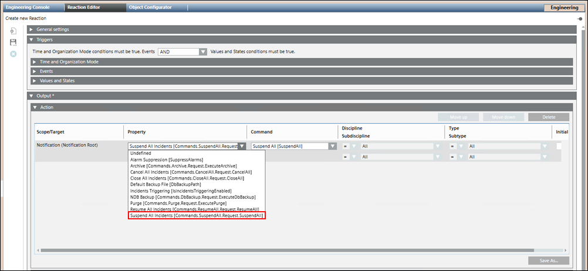
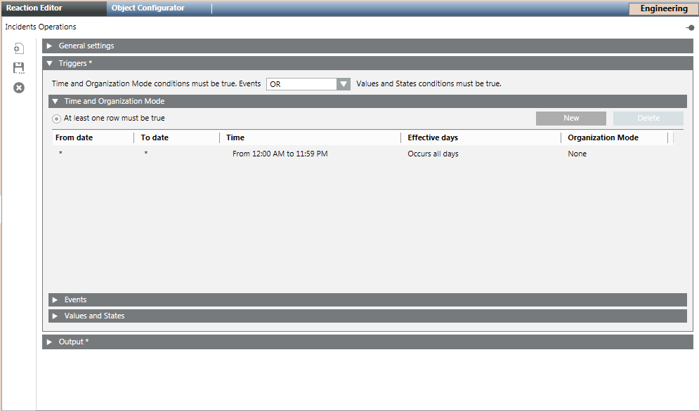

All Incident Operations using Reactions
This section describes the procedure to suspend, resume, cancel, and close an incident. This example (Suspend All) is common to all the commands.
- Select Applications > Logics > Reactions.
- Open the Output expander and thereafter, open the Action expander.
- From System Browser, drag a notification node to the Action expander.
- From the Property drop-down list, select any of the following commands:
- To suspend all the active incidents, select Suspend All Incidents. The command structure [Commands.SuspendAll.Request.SuspendAll] varies for other commands respectively.
- To resume all the suspended incidents, select Resume All Incidents.
- To cancel all incidents, select Cancel All Incidents.
- To close all incidents, select Close All Incidents.

- Open the Triggers expander and specify if the conditions specified in both, Events as well as Values and States, expanders must be true or if the conditions specified in either of the expanders must be true by selecting the appropriate operator (AND, OR) in the drop-down list.
- Open the Time and Organization expander.
- Click New to add a new row and specify a new time or schedule, when you want to trigger the initiate incident command.

- Click Save As
 .
. - In the Save Object As dialog box, enter a name and description.
- Click OK.
- The reaction is saved under the Reaction node in the System Browser.